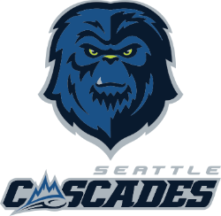

The Seattle Cascades has two Ultimate Frisbee teams, the WOMXN's and the OPEN team. The WOMXN's compete in the Western Ultimate League while the OPEN play in the Western Division of the American Ultimate Disc League.
Their name "Seattle Cascades" refers to the Cascade Mountain Range which goes through Washington State. They retired their old name "Seattle Raptors".

The Cascades team colors is a blend of light blue and navy blue. they use navy blue for their darker colors and light blue for the lighter tones. The mascot is Casey and kid Casey, the mascot is also gender neutral. The mascots are Sasquatches just like the urban legend.